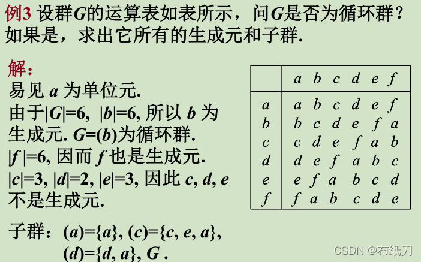
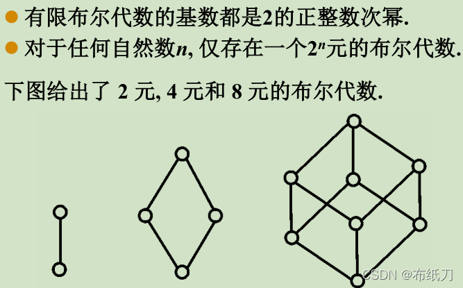

一、基本概念
1.二元运算的定义
1.1设S为集合，映射f:S*S->S称为S上的一个二元运算，简称二元运算
1.2S中任何两个元素都可以进行运算，且运算的结果唯一
1.3S中任意两个元素的运算结果都属于S，即S对该运算封闭
1.4表示二元运算的方法：解析公式和运算表
2.运算规律
2.1设*为非空集合S上的二元运算
2.1.1若任意x,y,z属于S有(x*y)*z=x*(y*z)，则称运算*在S上满足结合律
2.1.2若任意x,y属于S有x*y=y*x，则称运算*在S上满足交换律
2.2设。和*为非空集合S上两个不同的二元运算
2.2.1若任意x,y,z属于S有z。(x*y)=(z。x)*(z。y)则称运算。对运算*满足左分配律
2.2.2若任意x,y,z属于S有(x*y)。z=(x。z)*(y。z)则称运算。对运算*满足右分配律
2.2.3若任意x,y,z属于S有z。(x*y)=(z。x)*(z。y)且(x*y)。z=(x。z)*(y。z)则称运算。对运算*满足分配律
2.3设*为非空集合S上二元运算，若任意x,y,z属于S，若x*y=x*z，且x不是零元，则y=z；若y*x=z*x，且x不是零元，则y=z，则称*运算满足消去律
2.4二元运算的性质
2.4.1设。为非空集合S 上的二元运算 ， 若运算。满足结合律 ，则任意ai属于S，i=1, 2, … , n ，n 个元素a1,a2, … , an 的乘积( 关于运算。的运算结果a1。a2。。。。an )仅与这n个元素及其顺序有关而唯一决定
2.4.2 设。为非空集合S 上的二元运算，若运算。满足结合律和交换律，则任意ai属于S，i=1, 2, … , n，n个元素a1, a2, … , an的乘积a1。a2 。… 。an仅与这n个元素有关而与其顺序无关
2.4.3设。和*为非空集合S上两个不同的二元运算，若运算*满足结合律，运算。对运算*满足（左右）分配律，则任意a,ai属于S，i=1,2,…,n，有a。(a1*a2*a3*…*an)=(a。a1)*(a。a2)*…(a。an)；(a1*a2*…*an)。a=(a1。a)*(a2。a)*…*(an。a)，分配律的重要性在于能够让两种代数运算间有一种联系
3.特异元素
3.1单位元也叫幺元
3.1.1定义：设*为S上的二元运算
3.1.1.1若存在e存在S，使得对任意x属于S都有e*x=x，称e是S中关于*运算的左单位元
3.1.1.2若存在e存在S，使得对任意x属于S都有x*e=x，称e是S中关于*运算的右单位元
3.1.1.3若e记为左单位元又为右单位元，则e为S上关于*运算的单位元
3.1.2单位元唯一性定理：若S分别含有左右单位元时，左右单位元相同且为S上唯一的单位元
3.2零元
3.2.1定义：设*为S上的二元运算
3.2.1.1若存在e存在S，使得对任意x属于S都有e*x=e，称e是S中关于*运算的左零元
3.2.1.2若存在e存在S，使得对任意x属于S都有x*e=e，称e是S中关于*运算的右零元
3.2.1.3若e记为左零元又为右零元，则e为S上关于*运算的单位元
3.2.2零元唯一性定理：若S分别含有左右零元时，左右零元相同且为S上唯一的零元
3.2.3|S|>=2，单位元与零元不同；|S|=1，这个元素既是单位元也是零元
3.3可逆元素和逆元
3.3.1定义：设*为S上的二元运算
3.3.1.1若存在x存在S，使得对任意y属于S都有x*y=e，称x是y的左逆元
3.3.1.2若存在x存在S，使得对任意y属于S都有y*x=e，称x是y的右逆元
3.3.1.3若x记为y的左逆元又为右逆元，则x为y的逆元，y为可逆元素
3.3.2逆元唯一性定理：若y有左右逆元时，左右逆元相同且为y唯一的逆元
4.代数系统的定义
4.1非空集合S和S上k个一元或二元运算*1,*2,…,*k组成的系统称为一个代数系统，记做(S,*1,*2,…,*k)
4.2子代数：设(S,*1,*2,…,*k)是代数系统，B是S的非空子集，如果B对*1,*2,…,*k都是封闭的，且B和S含有相同的代数常数，则称(B,*1,*2,…,*k)是S的子代数系统
4.3最大的子代数就是S本身
4.4最小的子代数：如果令S中所有代数常数构成的集合是B，且B对S中所有的运算都是封闭的，则B就构成了S的最小的子代数
4.5最大和最小的子代数称为S的平凡的子代数
4.6若B是S的真子集，则B构成的子代数称为S的真子代数
5.代数系统的同构与同态
5.1同态定义：设(A,%)和(B,*)是两个代数系统，f:A->B，且任意x,y属于A有f(x%y)=f(x)*f(y)，则称f是A到B的同态映射，简称同态
5.2同态分类：
5.2.1f为单射，则称为单同态
5.2.2f为满射，则称为满同态，这时称B为A的同态像，记作A~B
5.2.3f为双射，则称为同构，也称代数系统A同构于B，记作A~=B
5.2.4若A=B，则称作自同态
5.3满同态映射保持运算的规律
5.4满同态映射保持特异元素
二、半群
1.半群的定义
1.1半群定义1：设*是非空集合S上的一个二元代数运算，称为乘法。如果任意a,b,c属于S，有(a*b)*c=a*(b*c)，则称集合S关于乘法*作成一个半群，并记为(S,*)
1.2半群定义2：设(S,*)是一个代数系统，如果运算*满足结合律，则称(S,*)为一个半群
1.3可换半群（交换半群）：如果半群(S,*)中的二元运算满足交换律，则称(S,*)为可换半群
1.4若S为有限集（无限集），称半群(S,*)为有限半群（无限半群）
1.5一般，对任意一个正整数n，必有一个恰好含有n个元素的半群（模n剩余类）
1.6单位元并不是半群的固有性质，没有单位元的半群中有可能有多个左（右）单位元
1.7如果半群(S,*)既有左单位元又有右单位元，则左单位元与右单位元相等，从而有单位元且单位元唯一
1.8有单位元的半群称为独异点或称为幺半群或含幺半群
2.子半群
2.1子半群定义1：设(S,*)是一个半群，B是S的一个非空子集。如果B对运算*封闭，则称(B,*)是(S,*)的一个子半群，并简称B是S的子半群
2.2子半群定义2：设(S,*)是一个半群，B是S的一个非空子集。如果任意a,b属于B，都有a*b属于B，则称(B,*)是(S,*)的一个子半群，并简称B是S的子半群
2.3子半群的判别：半群(S,*)的非空子集B是子半群当且仅当B*B包含于B
2.4子半群性质：设(S,*)是一个半群，A是S的一个非空子集，则S的一切包含A的子半群的交集Q也是S的子半群，Q称为由A生成的子半群，记作(A)
2.5半群的理想：若SA包含于A，半群(S,*)的一个非空子集A称为S的一个左理想；若A既是S的左理想又是S的右理想，称A是S的理想
2.6生成的理想：半群(S,*)的非空子集A生成的左（右）理想为半群(S,*)的所有包含A的左（右）理想的交；S的包含A的一切理想的交称为由A生成的理想
2.7设A是半群(S,*)的一个非空子集，(V为集合的并运算)则
2.7.1由A生成的左理想为AVSA
2.7.2由A生成的右理想为AVAS
2.7.3由A生成的理想是AVSAVASVSAS
2.8循环半群：如果这个半群是由其中的某个元素生成的，由元素a生成的循环半群记为(a)
2.9循环半群必是可换半群
3.半群的同态与同构
3.1同态定义：设(S1,%)和(S2,*)是两个半群，如果存在一个从S1到S2的映射f，使得对任意x,y属于S1有f(x%y)=f(x)*f(y)
3.2f单射–单同态；f满射–满同态；f双射–同构
3.3设(S1,%)为一个半群，(S2,*)是一个代数系统。若存在一个从S1到S2的满同态（映射）f，则(S2,*)是一个半群
3.4设f是半群(S1,%)到半群(S2,*)的同态，g是半群(S2,*)到半群(S3,.)的同态，则gf是半群(S1,%)到半群(S3,.)的同态
3.5设(S,%)和(T,*)是两个半群，f是S到T的同态。半群(S/Ef,.)称为商半群，其中Ef为等价关系，S/Ef为等价关系对集合的划分得到的商集。令r:S->S/Ef，任意a属于S，r(a)=[a]，则称为r为S到S/Ef的自然同态，可证明r为S到S/Ef的一个满射
三、幺半群
1.幺半群的定义
1.1幺半群定义：
1.1.1设(S,*)是半群，若e属于S是关于*运算的单位元，则称(S,*)是幺半群，也叫独异点，也记作(S,*,e)
1.1.2有单位元的半群(S,*)称为幺半群或独异点
1.1.3如果幺半群中二元运算满足交换律，则称其为交换幺半群或可换幺半群
1.2把S的基数称为幺半群(S,*,e)的阶，一般地，对任何一个正整数n，必有一个恰好含有n个元素地幺半群（模n剩余类）
1.3幺半群地单位元必有逆元，其他元不一定有逆元
1.4有限半群(S,*)为一个幺半群当且仅当存在s,t属于S使得sS=S,St=S
1.5有限半群(S,*)为一个群当且仅当任意s属于S有sS=S，且存在t属于S使得St=S
2.子幺半群
2.1子幺半群的定义：设(S,*,e)是一个幺半群，B是S的一个子集。如果任意a,b属于B，都有a*b属于B，且e属于B，则称B是S的子幺半群（含单位元的子半群）
2.2子幺半群的判别：幺半群(S,*)的子集B是子幺半群当且仅当e属于B且B*B包含于B
2.3子幺半群的性质：
2.3.1一个幺半群的任意多个子幺半群的交集仍是该幺半群的子幺半群
2.3.2设(S,*,e)是一个幺半群，A是S的一个非空子集，则S的一切包含A的子幺半群的交集Q也是S的子幺半群
2.4生成子幺半群：设A是幺半群(S,*)的一个非空子集，由S的包含A的所有子幺半群的交称为由A生成的子幺半群，记为(A)
2.5幺半群的理想
2.5.1理想的定义：若SA包含于A，则幺半群(S,*,e)的一个非空子集A称为S的一个左理想；如A既是S的左理想又是S的右理想，则称A是S的理想
2.5.2生成的理想的定义：幺半群(S,*,e)的非空子集A生成的左（右）理想为半群(S,*)的所有包含A的左（右）理想的交；S的包含A的一切理想的交称为由A生成的理想
2.5.3设A是幺半群(S,*,e)的一个非空子集，则
2.5.3.1由A生成的左理想是SA
2.5.3.2由A生成的右理想是AS
2.5.3.3由A生成的理想是SAS
2.6循环幺半群：由其中的某个元素生成的幺半群，必是可换幺半群
3.幺半群的同态与同构
3.1同态的定义：设(S1,%,e1)和(S2,*,e2)是两个幺半群，如果存在一个从S1到S2的映射f，使得任意x,y属于S1，有f(x%y)=f(x)*f(y)，f(e1)=e2，则称f为S1到S2的一个同态（映射），而称幺半群S1与S2同态
3.2f单射->单同态;f满射->满同态;f双射->同构
3.3幺半群的Cayley定理：
3.3.1设S是一个非空集合，一个从S到S的映射称为S的一个变换。一个从S到S的满射、单射或双射称为S的一个满射变换、单射变换或一一变换
3.3.2幺半群的Cayley定理：任何幺半群(S,%,e)同构于某个变换幺半群(L(S),*,Is)
3.4幺半群同态的性质：
3.4.1设(S1,%,e1)是一个幺半群，(S2,*)是一个代数系统。如果存在一个从S1到S2的满射f，使得任意x,y属于S1有f(x%y)=f(x)*f(y)，则(S2,*)是一个幺半群
3.4.2设(S1,%,e1)和(S2,*,e2)是两个幺半群。如果S1到S2的有一个同态f，则S1的可逆元a的像f(a)也可逆且f(a)-=f(a-)
3.5商幺半群根据商半群可类似定义商幺半群
3.6幺半群的同态基本定理：
四、群
1.群的定义
1.1定义1：设(G,*,e)是幺半群，若G中的每个元素都有逆元，则称(G,*,e)是群，记作(G,*)，有时简记为G
1.2定义2：设G是一个非空集合，*是G上的二元代数运算，称为乘法。如果下列三个条件成立，则称G关于乘法*作成一个群
1.2.1乘法*满足结合律
1.2.2G关于乘法*有一个左单位元（若为右单位元，则1.2.3里为右逆元）e，即任意a属于G，存在元e属于G，使得e*a=a
1.2.3对于G的每个元素，关于乘法*有一个左逆元，即任意a属于G，存在元b属于G，使得b*a=e，e为1.2.2中单位元
1.3定义3：设G是一个非空集合，*是G上的二元代数运算，称为乘法。如果下列两个条件成立，则称G关于乘法*作成一个群
1.3.1乘法*满足结合律
1.3.2任意a,b属于G，方程a*x=b和y*a=b在G中有解
2.群的基本性质
2.1设(G,*)为群，则任意a属于G，a的左逆元也是a的右逆元
2.2设(G,*)为群，则G的左单位元e也是右单位元
2.3设(G,*)为群，则任意a,b属于G，方程a*x=b和y*a=b在G中的解唯一
2.4群(G,*)中的乘法满足消去律，即任意a,b,c属于G有：
2.4.1若a*b=a*c，则b=c(左消去律)
2.4.2若b*a=c*a，则b=c(右消去律)
2.5设(G,*)为群，则
2.5.1任意a属于G，(a-)-=a
2.5.2任意a,b属于G，(a*b)-=b-*a-
2.6线性空间
3.群的术语
3.1若G是有限集，称群(G,*)是有限群。G的基数称为群G的阶，有限群G的阶记作|G|
3.2若G是无限集，称群(G,*)是无限群
3.3若群(G,*)中的二元运算满足交换律，则称(G,*)为交换律或阿贝尔(Abel)群
3.4实例
3.5群中元素的幂
3.5.1设G是群，a属于G，n属于Z，则a的n次幂为（群中元素可以定义负整数次幂）：
3.5.2设G为群，则G中的幂运算满足：
3.5.2.1任意a属于G，a^n*a^m=a^(n+m)，n,m属于Z
3.5.2.2任意a属于G，(a^n)^m=a^(n*m)，n,m属于Z
3.5.2.3若G为交换群，则(a*b)^n=a^n*b^n
3.6元素的阶
3.6.1定义：设G是群，a属于G，使得等式a^k=e成立的最小正整数k称为a的阶，记作|a|=k，称a为k阶元。若不存在这样的正整数k，则称a为无限阶元
3.6.2G为群，a属于G且|a|=r，设k是整数，则
3.6.2.1a^k=e当且仅当r|k
3.6.2.2|a-|=|a|
4.有限群的定义及性质
4.1有限群的定义1：设G是一个非空有限集合，*是G上的二元代数，称为乘法。若下列两个条件成立，则称G关于乘法*作成一个有限群
4.1.1乘法*满足结合律
4.1.2乘法*满足消去律
4.2有限群的定义2：设G是一个非空有限集合，*是G上的二元代数运算，称为乘法。若下列两个条件成立，则称G关于乘法*作成一个有限群
4.2.1乘法*满足集合律
4.2.2任意a,b存在G，方程a*x=b和y*a=b在G中有解
4.3有限群的性质：
4.3.1有限群的每个元素的阶均为有限且不超过群的阶
4.3.2偶数阶群必含2阶元
5.子群的定义
5.1子群就是群的子代数
5.2子群的定义1：设G是群，H是G的非空子集，如果H关于G中的运算封闭且H与G含有相同的代数常数，则称H为G的子群，记作H<=G
5.3子群的定义2：设G是群，H是G的非空子集
5.3.1如果H关于G中的运算封闭且构成群，则称H是G的子群，记作H<=G
5.3.2若H为G的子群，且H为G的真子集，则称H为G的真子群，记作H<G
5.4平凡子群：群本身以及只包含单位元的群
6.子群的性质
6.1设G是群，H<=G，则
6.1.1H的单位元必是G单位元
6.1.2H的元素a在H中的逆元也是a在G中的逆元
6.2设G是群，H,K是G的子群，则
6.2.1HNK也是G的子群=>G任意多个子群的交集还是G的子群
6.2.2HUK是G的子群当且仅当H包含于K或K包含于H
6.2.3任一群不能是其两个真子群的并集
6.3一个群可以是其三个真子群的并集
7.子群的判别
7.0根据子群的定义可以推导其判别方法
7.1设G为群，H是G的非空子集，则H是G的子群当且仅当
7.1.1任意a,b属于H有a*b属于H
7.1.2任意a属于H有a-属于H
7.2设G为群，H是G的非空子集。H是G的子群当且仅当任意a,b属于H有a*(b-)属于H
7.3设G为群，H是G的非空有限子集，则H是G的子群当且仅当任意a,b属于H有a*b属于H
8.生成子群
8.1群的中心
8.2群的生成子群的定义1：设G为群，M是G的非空子集，G的所有包含M的子群的交集称为由M生成的子群，记为(M)
8.3生成子群的定义2：设G为群，a属于G，令H={a^k|k属于Z}，则H是G的子群，称为由a生成的子群，记作(a)
8.4实例：Klein四元群G={e,a,b,c}的所有生成子群是：(e)={e},(a)={e,a},(b)={e,b},(c)={e,c}
9.变换群的定义
9.1变换的定义：设S是一个非空集合，一个从S到S的映射称为S的一个变换。一个从S到S的满射、单射或双射称为S的一个满射变换、单射变换或一一变换
9.2对称群的定义（变换的集合、映射的集合）：设S是一个非空集合，从S到S的所有一一变换之集记为Sym(S)，则称Sym(S)对变换的合成*构成一个群，称为S上的对称群，记作(Sym(S),*)
9.3变换群的定义1：群(Sym(S),*)的任一子群称为S上的一个变换群。
9.4变换群的定义2：一个非空集合S的若干个一一变换关于变换的合成*作成的一个群称为S的一个变换群
10.群的同构定义
10.0设(G1,%)和(G2,*)是两个群。如果存在一个双射f:G1->G2，且任意x,y属于G1有f(x%y)=f(x)*f(y)，则称群G1与G2同构，记为G1~=G2.称f是G1到G2的一个同构（映射）
11.群的Cayley定理
11.1群的Cayley定理：任意一个群都同构于某个变换群
11.2设(G,*)是一个群。若存在一个双射f:G->G，且对任意x,y属于G有f(x*y)=f(x)*f(y)，则称f是G的一个自同构（映射）
11.3设(G,*)是一个群。G的所有自同构之集A(G)对映射的合成运算构成一个群，称为G的自同构群
11.4设(G,*)是一个群。a是G的一个固定元素，任意x属于G，f(x)=a*x*(a-)，则f是G的一个自同构（映射）。称f是由a确定的G的一个内自同构。G的其他自同构称为外自同构。
11.5设(G,*)是一个群。G的所有内自同构之集是G的自同构群得一个子群，称为内自同构群
11.6补充：
11.6.1非一一变换关于变换合成所作成得群是存在得
11.6.2设M是任一非空集合，G是由M的若干个变换作成的群。可证明：G是M上的一个变换群当且仅当M上的恒等变换Im属于G
11.6.3设M是任一非空集合，G是由M的若干个变换作成的群。可证明：G是M上的一个变换群当且仅当由M上的单射f属于G
11.6.4设M是任一非空集合，G是由M的若干个变换作成的群。可证明：G是M上的一个变换群当且仅当由M上的满射f属于G
12.置换的定义
12.0设S是一个非空有限集合。一个从S到S的双射称为S的一个置换。若|S|=n，则一个从S到S的双射称为S的一个n元置换
13.置换的表示
13.0表示形式：
13.1设f,g是n元置换，f和g的合成f*g也是n元置换，称为f与g的乘积，记作f*g
13.2循环置换的形式
13.2.1k-循环置换
13.2.2n元恒等置换
13.2.3n元置换的性质
13.2.4没有共同数字的循环置换
13.3对换的形式
13.3.1每个置换都能分解成若干个对换的乘积
13.3.2如果把置换分解成若干个对换的乘积，则对换的个数的奇偶性是不变的
13.3.3如果n元置换f可以表示成奇数个对换之积，则称f为奇置换，否则称为偶置换
13.3.4n元奇置换和n元偶置换的个数相等，各有n!/2个
13.3.5循环置换的分解
14.置换群的定义
14.1定义1：设S是一个n元集合，从S到S的所有置换之集记为Sn，则把Sn对置换的合成*构成一个群，称为S上的n次对称群或n元对称群，记作(Sn,*)。群(Sn,*)的任一子群称为S上的一个n元置换群
1.4.2一个非空有限集合S的若干个置换关于置换的合成*作成的一个群称为S的一个置换群
15.置换群的Cayley定理
15.1任意一个有限群都同构于某个置换群
15.2设An是所有的n元偶置换作成一个集合，则An关于置换的合成作成一个群，称为n元交错群或n元交代群。显然An是Sn的一个子群
16.循环群的定义
16.1定义1：设G是群，如果G是由其中的某个元素a生成的，则称G是循环群，记作G=(a)，称a为G的生成元
16.2定义2：设G是群，若存在a属于G使得G={a^k|k属于Z}，则称G是循环群，记作G=(a)，称a为G的生成元
16.3性质：
16.3.1如果循环群G是由a生成的，则任意b属于G，存在一个整数m使得b=a^m
16.3.2循环群必是交换群
17.循环群的结构
17.0设G=(a)是循环群，根据生成元a的阶
17.1若a是n阶元，则G={a^0=e,a^1,a^2,…,a^(n-1)}，那么|G|=n，称G为n阶循环群
17.2若a是无限阶元，则G={a^0=e,a^(+/-1),a^(+/-2)…}，称G为无限循环群
18.循环群的数量
18.1设(G1,%)和(G2,*)是两个群。如果存在一个双射f:G1->G2，且任意x,y属于G1有f(x%y)=f(x)*f(y)，则称群G1与G2同构，记为G1~=G2。而称f是G1到G2的一个同构（映射）
18.2n阶循环群同构于Zn（剩余类）关于剩余类加法的类
18.3无限循环群同构于Z关于整数加法的类
19.循环群的生成元
19.1设G=(a)是循环群
19.1.1若G是无限循环群，则G只有两个生成元，即a与a-
19.1.2若G是n阶循环群，则G含有Q(n)个生成元。对于任何小于n且与n互质的数r属于{0,1,…,n-1},a^r是G的生成元。其中Q(n)称为欧拉函数：小于或等于n且与n互质的正整数的个数
20.循环群的子群
20.1设G=(a)是循环群，则
20.1.1循环群G的子群仍是循环群
20.1.2若G=(a)是无限循环群，则G的子群除{e}以外都是无限循环群(a^m)，m=1,2,…
20.1.3若G=(a)是n阶循环群，则G的每个子群的阶整除群的阶n。对n的每个正因子d，G有且只有一个d阶子群。G的全部子群为(a^m)，m|n
20.2实例

21.子群的陪集
21.1设H是群G的子群，a属于G。
21.1.1令aH={ah|h属于H}，称aH是子群H在G中的左陪集，称a为aH的代表元素
21.1.2令Ha={ha|h属于H}，称Ha是子群H在G中的右陪集，称a为Ha的代表元素
21.2左陪集的基本性质
21.2.1设H是群G的子群，则
21.2.1.1eH=H
21.2.1.2任意a属于G，有a属于aH
21.2.2设H是群G的子群，则任意a,b属于G有(a属于bH)<=>(b属于aH)<=>((a-)b属于H)<=>(aH=bH)
21.2.3设H是群G的子群，则
21.2.3.1任意a属于G，aH!=O(O为空集)
21.2.3.2任意a,b属于G，aH=bH或aHNbH=O(O为空集)
21.2.3.3UaH=G
21.2.4设H是群G的子群，则H的所有左陪集构成的集族是G的一个划分
21.2.5设H是群G的子群，则任意a,b属于G，|aH|=|bH|=|H|=|Ha|=|Hb|
21.2.6设H是群G的子群，令Sl为H的所有左陪集构成的集族，Sr为H的所有右陪集构成的集族，则|Sl|=|Sr|
22.Lagrange定理
22.1定义：设G是有限群，H是G的子群，则|G|=|H|*[G:H]，其中[G:H]是H在G中的不同左陪集（或右陪集）个数，称为H在G中的指数
22.2推论1：设G是n阶群，则任意a属于G，|a|是n的因子，且有a^n=e
22.3推论2：对阶为素数的群G，必存在a属于G使得G=(a)（阶为素数的群都是循环群）
23.Lagrange定理的应用
23.1如果群G只含1阶和2阶元，则G是Abel群
23.26阶群中必含有3阶元
23.3阶小于6的群都是Abel群
23.4若G是一个有限交换群，则Lagrange定理的逆成立
五、群的同态基本定理
1.正规子群与商群
1.1正规子群的定义：设H是群G的子群。如果任意a属于G有aH=Ha，则称H是群G的正规子群或不变子群，记作H▲G
1.2商群的定义：群G的正规子群H的所有左陪集构成的集合对群子集乘法形成一个群称为G对H的商群，记为G/H
1.3正规子群的判别定理：设H是群G的一个子群，则
1.3.1H是群G的正规子群<=>任意a属于G有aH(a-)=H
1.3.2H是群G的正规子群<=>任意a属于G有aH(a-)包含于H
1.3.3H是群G的正规子群<=>任意a属于G，h属于G有ah(a-)属于H
2.群的同态定义
2.1定义：设(G1,%)和(G2,*)是两个群。如果存在一个从G1到G2的映射f，使得任意x,y属于G1有f(x%y)=f(x)*f(y)，则称f是G1到G2的一个同态（映射），而称群G1与G2同态。f满射–满同态；f单射–单同态
2.2性质：
2.2.1设(G1,%)的(G2,*)是两个群。f是从G1到G2的同态，则
2.2.1.1f(e1)=e2
2.2.1.2任意x属于G1有(f(x))-=f(x-)
2.2.2设(G1,%)是一个群，(G2,*)是一个代数系统。若存在一个从G1到G2的满射f，使得任意x,y属于G1有f(x%y)=f(x)*f(y)，则(G2,*)是一个群
2.2.3设(G1,%)和(G2,*)是两个群。f是从G1到G2的满同态，则G2的单位元e2的完全原象f-(e2)={x|x属于G1，f(x)=e2}是G1的一个正规子群
2.3设(G1,%)和(G2,*)是两个群。f是从G1到G2的满同态，e2是G2的单位元，则G1的正规子群f-(e2)称为同态f的核，记为Ker f。f(G1)称为f下G1的同态象
2.4群的同态性质：设(G1,%)和(G2,*)是两个群，f是从G1到G2的满同态，则
2.4.1如果H1是G1的子群，则f(H1)是G2的子群
2.4.2如果N1是G1的正规子群，则f(N1)是G2的正规子群
2.4.3如果H2是G2的子群，则f-(H2)是G1的子群
2.4.4如果N2是G2的正规子群，则f-(N2)是G1的正规子群
2.5自然同态：设N是G的正规子群，则G~G/N。若f是G到G/N的自然同态，则Ker f=N
3.群的同态基本定理
3.1设(G1,%)和(G2,*)是两个群。f是从G1到G2的满同态，E=Ker f，则G1/E~=G2
3.2群(G1,%)到群(G2,*)的任一满同态f均可分解成一个自然同态g与一个同构h的合成，即f=hg并且h是唯一的
3.3群的同态基本定理的应用
六、环
1.环的定义与性质
1.1定义：设(R,+,*)是代数系统，+和*是二元运算。若满足以下条件，则称(R,+,*)是一个环
1.1.1(R,+)构成交换群
1.1.2(R,*)构成半群
1.1.3*运算关于+运算满足左、右分配律
1.2通常称+运算为环中的加法，*运算为环中的乘法，环中加法单位元记作0，并称为R的零元（素），乘法单位元（若存在）记作1，对任何元素x，称x的加法逆元为负元，记为-x，若x存在乘法逆元，则称之为逆元，记为x-
1.3若R是有限非空集合，称环(R,+,*)是有限环
1.4设(R,+,*)是环
1.4.1若环中乘法*适合交换律，则称R是交换环或可换环
1.4.2若环中乘法*存在单位元，则称R是含幺环
1.4.3若环含有唯一左（右）单位元e，则e为环的单位元（相对*）（构造re!=0,re-r+e为左单位元矛盾）
1.5运算性质：设(R,+,*)是环，则
1.5.1任意a存在于R，a0=0a=0
1.5.2任意a,b属于R，(-a)b=a(-b)=-ab
1.5.3任意a,b,c属于R，a(b-c)=ab-ac,(b-c)a=ba-ca
1.5.4(na)b=a(nb)=n(ab)
1.6零因子定义：设(R,+,*)是环，a属于R，a!=0。若存在一个元b属于R，b!=0，使得ab=0，则称a是R的一个左零因子。如果a既是R的左零因子，又是R的右零因子，则称a是R的零因子。若R有左零因子，则R必有右零因子
1.7特殊环
1.7.1无零因子环：环R是无零因子环当且仅当在R中乘法满足消去律
1.7.2整环、除环（体）、域。至少有一个非零元的无零因子有限环是体
1.7.3环(R,+,*)是体的充分必要条件是R\{0}!=O且任意a,b属于R\{0}，方程ax=b(xa=b)在R中有解
1.7.4域中除法及其性质
2.无零因子环的特征
2.1在一个无零因子环中，每个非零元素对加法的阶均相同
2.2体和域中每个非零元素对加法的阶均相同
2.3无零因子环R中非零元素对加法的阶称为该环的特征数，简称特征，记为ChR
2.4若无零因子环R的特征数为正整数p，则p为素数
2.5整环、体和域的特征数或是无穷大，或是一个素数
3.子环、理想子环与商环
3.1环(R,+,*)的一个非空子集S若对R中的加法和乘法也作成一个环，则称S为R的一个子环
3.2环(R,+,*)的一个非空子集S若对R中的加法和乘法封闭且也作成一个环，则称S为R的一个子环
3.3平凡子环：{0}和R本身也是R的子环
3.4子环的判定：
3.5子体（域）的定义及其判定
3.6环与子环包含单位元没有必然联系
3.7理想的概念（构造商环）：
3.8真理想：若I是环R的理想，且I是R的真子集，I称为R的真理想
3.9理想判定定理：设R是环，I是R的非空子集，I是R的理想的充要条件
3.9.1任意a,b属于I，a-b属于I
3.9.2任意r属于R，a属于I，ra属于I，ar属于I
3.10设R是环，A是R的非空子集。R中包含A的一切理想的交称为由A生成的理想，记作(A)。若A={a}，则(A)简记为(a)，并称(a)为R的主理想
3.11任一非零环R至少有两个理想：{0}和R
3.12任一环R的零理想（子环）{0}是主理想
3.13若环R有单位元1，则R是主理想，且R=(1)
3.14生成理想
3.15体和域只有两个理想，即零理想和它自身
4.环的同态基本定理
4.1环的同态定义
4.2环的同态基本性质

5.极大理想
5.1极大理想的定义1：若H是R的真理想，且R不存在真理想N使得H为N的真子集，则环R的理想H称为R的极大理想
5.2极大理想的定义2：如果除了R同H自己以外，没有包含H的理想，则环R的一个不等于R的理想H称为R的极大理想
5.3极大理想的定义3：若N是R的理想，且H为N的真子集，则N=R（即R没有包含H且不等于H的真理想），则环R的真理想H称为R的极大理想
5.4一个域的理想只有零理想{0}和它自身，反过来，一个只有这两个理想的环不一定是域
5.5若含幺交换环R除了零理想{0}和它自身以外没有其他的理想，则R一定是域
5.6设R是一个有单位元的可换环，H是R的理想。R/H是域当且仅当H是R的极大理想
5.7若P不为素数，则Zp肯定不是域
5.8关于整环相关问题

七、格
1.格的定义及性质
1.1格的定义1：设(L,《)是偏序集，如果任意x,y属于L，{x,y}都有上确界和下确界，则称L关于偏序《作成一个格
1.2格的定义2：设(L,《)是偏序集，如果任意x,y属于L，上确界sup{x,y}和下确界inf{x,y}都存在，则称(L,《)为格
1.3求{x,y}上确界和下确界可以看成x,y的二元运算^和V，即：
1.3.1xVy=sup{x,y}（称为x与y的并）
1.3.2x^y=inf{x,y}（称为x与y的交）
1.3.3实例：
1.3.4并非所有偏序集都是格（缺少上确界或下确界）
1.3.5任一全序集必是格
1.3.6子群格：设G为群，令L(G)={H|H为G的子群}，则偏序集(L(G),集合包含运算)称为G的子群格
1.3.6.1H1^H2=H1与H2的交集
1.3.6.2H1VH2=H1与H2的并集的生成子群（两个子群的并集不一定是子集）
1.3.6.3子群格实例
1.4格的性质：（对偶原理）设f是含有格中元素以及符号=，《，》，^，V的命题，令f*是将f中的《替换成》，》替换成《，V替换为^，^替换成V所得到的命题，则称f*为f的对偶命题
1.5格的对偶原理：设f是含有格中元素以及符号=，《，》，V，^等的命题，若f对一切格为真，则f的对偶命题f*也对一切格为真
1.6根据上确界和下确界定义，设(L，《 )为格，任意x,y,z属于L，则
1.6.1x《 xVy,y《 xVy;x^y《 x,x^y《 y
1.6.2若x《 z，y《 z，则xVy《 z
1.6.3若z《 x，z《 x，则z《 x^y
1.7设(L，《)是格，则运算V和^满足交换律、结合律、幂等律和吸收律
1.7.0吸收律：aV(a^b)=a,a^(aVb)=a（可结合交换律完成一系列等价代换）
1.8设L是格，则任意a,b属于L有a《 b <=> a^b=a <=> aVb=b
1.9设L是格，任意a,b,c,d属于L，若a《 b且c《 b，则a^c《 b^d，aVc《 bVd
1.10设L是格，任意a,b,c处于L，若b《 c，则a^b《 a^c，aVb《 aVc
1.11一般说来，格中的V和^运算不满足分配律
1.12格的定义3：设(S,*,%)是具有两个二元运算的代数系统，若对于*和%运算适合交换律、结合律、吸收律，则可以适当定义S中偏序关系《 ，使得(S,《)构成格，且任意a,b属于S有sup{a,b}=aVb=a%b,inf{a,b}=a^b=a*b
1.13格的定义4：设(S,*,·)是代数系统，*和·是二元运算，如果*和·满足交换律、结合律和吸收律，则(S,*,·)构成格
1.14格的定义分类：代数格：由代数系统定义；偏序格：由偏序集定义
2.子格
2.1定义1：设(L,N,V)是格，S是L的非空子集，若S关于L中的运算N和V封闭，则称S是L的子格
2.2定义2：设(L,N,V)是格，S是L的非空子集，若S关于L中的运算N和V仍构成格，则称S是L的子格
3.格的同态与同构
3.1
3.2
4.特殊格
4.1有界格
4.1.1设L是格，若L存在最大元素和最小元素，则称L为有界格，一般将有界格记为(L,N,V,0,1)
4.1.2补充定义：
4.1.2.1最大元素：设(L,《 )是一个格，B被L包含，如果存在a属于B使得对B中每个元素x有x《 a，则称a是B中的最小元素
4.1.2.2最小元素：设(L,《 )是一个格，B被L包含，如果存在b属于B使得对B中的每个元素有b《 x，则称b是B中的最小元素
4.1.2.3一般将格中最大元素称为格的单位元，记为1；相反最小元素称为格的零元，记为0
4.1.3性质1：设(L,N,V,0,1)是有界格，则任意a属于L有aN0=0,aV0=a,aN1=a,aV1=1
4.1.4性质2：所有元素N=0，所有元素V=1
4.1.5性质3：对偶时0->1,1->0
4.1.6设(L,N,V,0,1)是有界格，a属于L，若存在b属于L使得aNb=0和aVb=1成立，则称b为a的补元
4.2有补格
4.2.1概念：设(L,N,V,0,1)是有界格，若L中所有元素都有补元存在，则称L为有补格
4.3分配格
4.3.1概念：设(L,N,V)是格，若任意a,b,c属于L，有aN(bVc)=(aNb)V(aNc),aV(bNc)=(aVb)N(aVc)则称L为分配格
4.3.2实例
4.3.3分配格的判别：设L是格，则L是分配格当且仅当L不含有与钻石格或五角格同构的子格
4.3.4推论：
4.3.4.1小于五元的格都是分配格
4.3.4.2任何一条链都是分配格，每个全序集都是分配格
4.3.5性质1：设(L,N,V)是格，若任意a,b,c属于L，有aN(bVc)=(aNb)V(aNc)<=>aV(bNc)=(aVb)N(aVc)
4.3.6性质2：设(L,N,V)是分配格，任意a,b,c属于L，如果aNb=aNc且aVb=aVc，则b=c
4.3.7性质3：设(L,N,V,0,1)是有界分配格，若L中元素a存在补元，则存在唯一补元
4.3.8性质4：任意全序集都是分配格
4.3.9性质5：有界分配格中，一切有补元的集合构成一个子格
4.3.10性质6：有补分配格中，De Morgan律成立，即任意a,b属于B，有(aNb)’=a’Vb’,(aVb)’=a’Nb’
4.4注意事项
八、布尔代数
1.布尔代数的定义及性质
1.1布尔代数定义：如果一个格是有补分配格，则称它为布尔格或布尔代数(L,N,V,’,0,1)，其中’为求补运算
1.1.0例子：设B为任意集合，则B的幂集格(P(B),N,V,~,O,B)构成布尔代数
1.2布尔代数性质1：
1.2.1(B,《 )为偏序集
1.2.2(B,N,V)是一个格
1.2.3(B,N,V)是一个有界格
1.2.4(B,N,V)是一个有补格
1.2.5(B,N,V)是一个分配格
1.3布尔代数性质2：设(B,N,V,’,0,1)是任一布尔代数，则运算V和N适合交换律、结合律、幂等律和吸收律
1.4布尔代数性质3：设(B,N,V,’,0,1)是任一布尔代数，则
1.4.1任意a,b属于B，有aNb=inf{a,b},aVb=sup{a,b};a《 b <=> aNb=a <=> aVb=b;a《 b <=> aNb’=0 <=> b’《 a’ <=> a’Vb=1
1.4.2任意a属于B有0《 a《 1;aN0=0,aV0=a;aN1=a,aV1=1
1.5布尔代数性质4：设(B,N,V,’,0,1)是任一布尔代数，则有
1.5.1任意a,b,c属于B，有aN(bVc)=(aNb)V(aNc),aV(bNc)=(aVb)N(aVc)
1.5.2任意a,b,c属于L，如果aNb=aNc且aVb=aVc，则b=c
1.5.3任意a,b,c属于B，有(aNb)V(bNc)V(cNa)=(aVb)N(bVc)N(cVa)（对偶式成立）
1.6布尔代数性质5：设(B,N,V,’,0,1)是任一布尔代数，则有
1.6.1任意a,b属于B，有aNa’=0,aVa’=1
1.6.20’=1,1’=0
1.6.3De Morgan律成立，即任意a,b属于B，(aNb)’=a’Vb’,(aVb)’=a’Nb’
1.7布尔代数作为代数系统的定义：设(B,*,·)是一个至少含有两个元素的代数系统，*和·是二元运算，若*和·运算满足交换律、分配律、同一律和补元律，则称(B,*,·)是一个布尔代数
2.布尔代数与布尔环的等价性
2.1(B,@,&)是一个环，@为对称差，&为乘法，a@b=(aNb’)V(a’Nb),a&b=aNb,布尔代数中的0为加法@的单位元，1为乘法&的单位元
2.2性质1：设(R,+,*)是一个环，如果环R中每个元素都是幂等元，即任意a属于R，a*a=a，则环R为交换环，且任意a属于R，a+a=0
2.3性质2：若环R中每个元素都是幂等元，则称环为布尔环
2.4等价性：
2.4.1任一布尔代数都定义了一个有单位元素的布尔环
2.4.2任一有单位元素的布尔环都定义了一个布尔代数
2.4.3（Stone）布尔代数与具有单位元素的布尔环是两种等价的代数结构
3.布尔代数的理想和同态
3.1子布尔代数的定义：设(B,N,V,’,0,1)是子布尔代数，S是B的一个非空子集，若满足以下两个条件，则称(S,N,V,’,0,1)是(B,N,V,’,0,1)的子布尔代数
3.1.1 0，1属于S
3.1.2任意a,b属于S，aNb,aVb,a’均属于S（封闭）
3.2子布尔代数的判别：设(B,N,V,’,0,1)是布尔代数，S是B的一个非空子集，则(S,N,V,’,0,1)是(B,N,V,’,0,1)的子布尔代数等价于以下两个条件
3.2.1任意a属于S，a’属于S
3.2.2任意a,b属于S，aNb属于S（或aVb属于S）
3.3子布尔代数的例子：设(S,N,V,’,0,1)是布尔代数，则
3.3.1({0,1},N,V,’,0,1)是(B,N,V,’,0,1)的一个子布尔代数
3.3.2如果a属于B，a!=0，a!=1，则({0,a,a’,1},N,V,’,0,1)是(B,N,V,’,0,1)的一个子布尔代数
3.4布尔环的理想判定：设(B,+,·)是布尔环，S是B的非空子集。S是B的理想的充要条件是
3.4.1任意a,b属于S，a+b属于S
3.4.2任意r属于B，a属于S，r·a属于S
3.5布尔代数理想：设(B,N,V,’,0,1)是布尔代数，S是B的一个非空子集，称S为(B,N,V,’,0,1)的理想
3.5.1V再S中封闭，即任意a,b属于S，aVb属于S
3.5.2任意r属于B，a属于S，rNa属于S
3.6布尔代数的理想：设(B,N,V,’,0,1)是布尔代数，S是B的一个非空子集，若满足下列两个条件，则称S是(B,N,V,’,0,1)的理想
3.6.1V在S中封闭，即任意a,b属于S，aVb属于S
3.6.2任意a属于S，只要r《 a就有r属于S
3.7真理想：若理想S!=B，则称S为真理想
3.7.1若S是真理想，则1不属于S
3.7.2理想不一定是子布尔代数
3.8生成的主理想：设(B,N,V,’,0,1)是布尔代数，a是B的任一元素，则称理想(a)={x|x属于B且x《 a}为由a生成的主理想
3.8.1若R是交换环且含幺环，则(a)={sa|s属于R}
3.9布尔代数的极大理想：布尔代数(B,N,V,’,0,1)的理想I称为极大理想<=>I为真理想且不存在真理想J使I被J包含<=>I为真理想且任意a属于B有a属于I或a’属于I
3.10布尔代数的同态定义
3.11简化定义
3.11.1简化定义只需满足2个或以上条件即可定义，但必须满足f(x’)=~f(x)
4.有限布尔代数的表示定理
4.1原子的概念1：设(B,N,V,’,0,1)是布尔代数。B中非零元a称为B的一个原子<=>若在B中不存在元素x，x!=0，x!=a，使得0《 x《 a <=>若在B中不存在元素x，x!=0，x!=a，使得0<x<a <=>若任意x属于B有0<x《 a，则x=a <=>若任意x属于B有0《 x《 a，则x=0或x=a
4.2原子的概念2：设(L,《 )是格，且具有最小元0.L中非零元a称为L的一个原子<=>若在L中不存在元素x，x!=0，x!=a，使得0<x<a<=>若任意x属于L，有0<x《 a，则x=a<=>若任意x属于L，有0《 x《 a，则x=0或x=a
4.3原子的性质：
4.3.1设(B,N,V,’,0,1)是布尔代数，B中非零元a是原子<=>任意x属于B，aNx=0或aNx=a
4.3.2布尔代数中任两个原子a于b的交aNb=0
4.3.3设(B,N,V,’,0,1)是有限布尔代数，则B中任一非零元b，必有原子a使a《 b
4.3.4任一至少含有两个元素的有限布尔代数必有原子
4.4有限布尔代数的表示定理：设(B,N,V,’,0,1)是有限布尔代数，A是B的全体原子构成的集合，则B同构于A的布尔代数(P(A),N,U,~,O,A)
4.5对于无限布尔代数4.3.3与4.4不成立
4.6一个无限布尔代数同构于某个集合的幂集的子族构成的布尔代数
4.7补充：

转自笔者CSDN的账号
本笔记除了自己的一些理解外，参考《近世代数》诸多ppt，图片出自ppt和网络，如有侵权，请联系笔者删除。
最后希望大家一起学习，共同进步，如果有疑问或错误欢迎联系笔者。